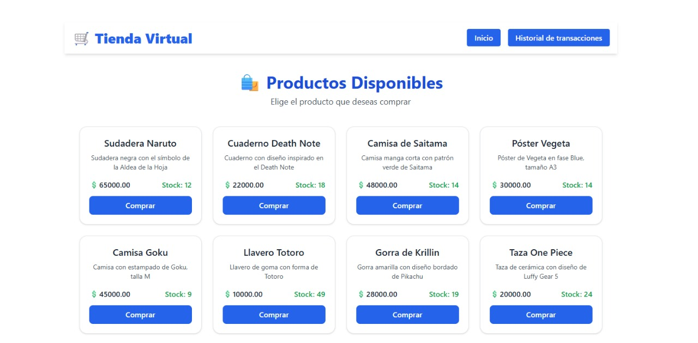
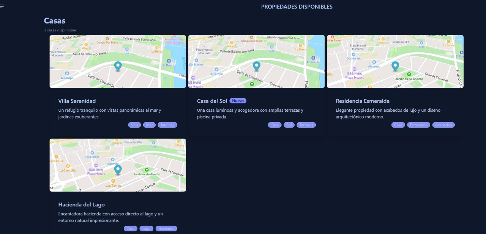
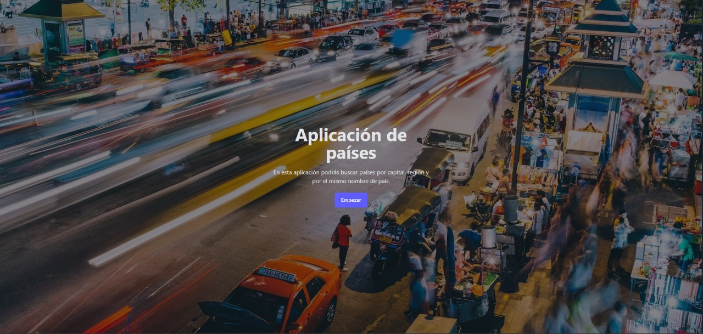
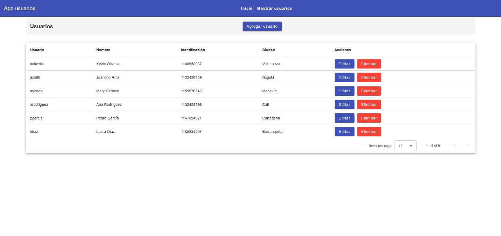
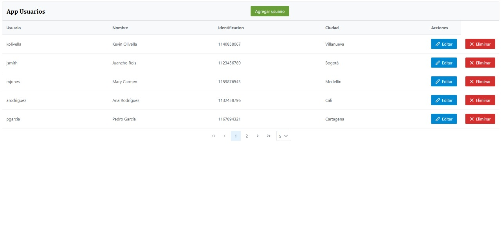
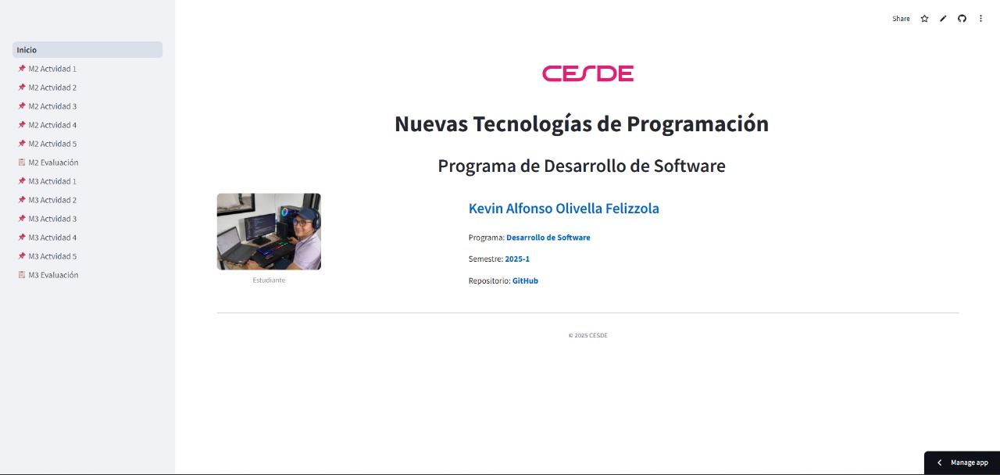
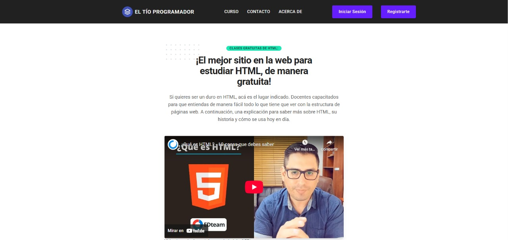

¡Hola!
Soy Kevin Olivella
Desarrollador de software apasionado por crear soluciones útiles y modernas.

Mis Proyectos
Bienvenido a mi portafolio de proyectos. Soy Técnico en Desarrollo de Software, y en este sitio encontrarás una selección de aplicaciones y soluciones que he desarrollado, utilizando tecnologías modernas como Angular, React, Python, JavaScript, y Typescript, entre otras. Cada proyecto refleja mi pasión por la programación y mi compromiso con la calidad.
Explora los detalles de cada proyecto y descubre cómo he aplicado mis habilidades para resolver problemas y crear experiencias interactivas.

Nexus
API multipropósito en desarrollo, construida con NestJS y TypeScript. Está diseñada para centralizar diversas funcionalidades backend. Conecta con una aplicación de gestión de clientes en Angular, integra WhatsApp Business para el envío de mensajes, y utiliza Prisma ORM para una gestión de base de datos robusta. Actualmente en construcción, con planes de expansión para incluir un módulo de facturación electrónica.

Tienda Virtual - Plataforma de compras con pasarela de pagos
Aplicación web Fullstack que simula una tienda en línea con integración real a la pasarela de pagos Wompi (sandbox). Permite a los usuarios visualizar productos, simular pagos con tarjeta, y consultar un historial de transacciones. El frontend está construido con React + Vite + Tailwind, y el backend con NestJS + PostgreSQL, con pruebas automatizadas y despliegue en Render y Vercel. Debido a que usé Renderpara el despliegue del backend en la V gratis, es importante "despertarlo" para que carguenlos registros. Acá está la URL del backend: https://wompi-backend-y2qy.onrender.com. El diseño totalmente responsive, validaciones visuales, y flujo completo de compra.

Maps Angular
Este proyecto es una aplicación web construida con Angular que utiliza Mapbox GL JS para mostrar mapas interactivos. Permite visualizar mapas en pantalla completa, agregar y gestionar marcadores, y mostrar información de casas con mini mapas. Además, integra temas visuales con Tailwind CSS y DaisyUI para una interfaz moderna y adaptable.

App_Paises
Aplicación SPA desarrollada en Angular que permite buscar información de países en tiempo real. Tecnologías: Angular 19, DaisyUI, TailwindCSS, Consumo de API REST.

App-Usuarios
SPA desarrollada con Angular 17 y Angular Material. CRUD de usuarios con servicios simulados. Diseño responsive.

App-Usuarios
SPA desarrollada con Angular 17 y PrimeNG. CRUD de usuarios con servicios simulados. El diseño es responsive también.

App del proyecto integrador
Este proyecto es una aplicación interactiva desarrollada con Streamlit para analizar datos de ventas simulados. Utiliza Pandas y NumPy para generar y manipular un DataFrame con información de productos, regiones y fechas. Incluye filtros interactivos, métricas calculadas (ingresos y ventas totales) y visualizaciones como gráficos de barras y líneas. Es ideal para demostrar habilidades en análisis de datos y desarrollo de aplicaciones web en Python.

El tío programador
Aplicación web "El tío programador". Desarrollada con HTML, CSS y JS
Proyecto en construcción:
Plataforma de registro de clientes con envío de notificaciones por WhatsApp. Desarrollada con Angular, Nestjs y Twilio (por ahora para pruebas). Permite registrar clientes, enviar notificaciones y consultar su historial de interacciones. El frontend utiliza Angular 19 con DaisyUI y TailwindCSS, mientras que el backend está construido con NestJS y PostgreSQL. Incluye pruebas unitarias y de integración, y está desplegada en Render y netlyfy.
Contáctame
¿Quieres colaborar o tienes una propuesta? Acá tienes mi CV; también llena los campos del formulario y te contactaré pronto.
Quién soy
Soy Kevin Olivella, desarrollador de software con experiencia en Angular, React, JavaScript / TypeScript, Python, Java y frameworks como Spring Boot y NestJS. También cuento con experiencia en bases de datos SQL como PostgreSQL, MySQL y SQL Server.
Me apasiona crear soluciones útiles y modernas que aporten valor real a las personas y a las empresas. Además, he complementado mi formación con certificaciones en HTML, CSS, React, Angular y Scrum. Mi objetivo es seguir creciendo como profesional y contribuir a proyectos de impacto.
Mi objetivo es seguir creciendo, contribuir a proyectos significativos y formar parte de equipos que valoren el compromiso, la innovación y el aprendizaje continuo.
Mi recorrido
-
Primer contacto con la tecnología
Desde joven mostré interés por computadores y cómo funcionaban.
-
Formación técnica
Estudié desarrollo de software con foco en lógica, programación y fundamentos web.
-
Proyectos y portafolio
He desarrollado proyectos con Java, Angular, Spring Boot y TailwindCSS.
-
Seguir aprendiendo y aportando